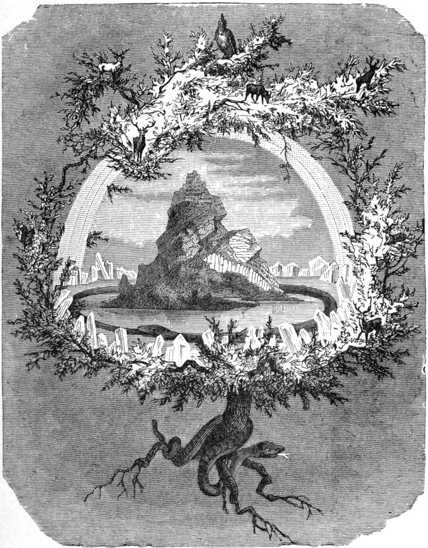

| Yggdrasil | |
|---|---|
|
 |
|
| Pronunciation | |
| Old Norse: |
Yggdrasill |
| Modern English: |
Yggdrasil |
Yggdrasil, the World Tree
Yggdrasil is known as the World Tree. It is the foundation within which resides the nine known realms of the world. These realms include Midgard (land of the humans), Asgard (land of the gods), Jotunheim (land of the giants), Alfheim (land of the elves), and five more. Under the world tree's roots resides the serpent Nidhogg, constantly eating at the roots of the tree, and above rests an eagle. The squirrel Ratatoskr carries insults between the two. The Völsupá describes the tree thus:
An ash I know there stands,
Yggdrasill is its name,
a tall tree, showered
with shining loam.
From there come the dews
that drop in the valleys.
It stands forever green over
Urðr's well.
The world tree is very important to many of the largest events in Norse mythology. It is on its branches where Odin "sacrificed himself to himself" for nine days to obtain the runes, the Norns weave the fate of every man and woman at its roots, and the tree will shake as one of the signs of the onset of Ragnarok.